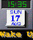

- To the list of import statements near the top of the file, add the
following statement:
import java.awt.event.*;
- Implement ActionListener so that when Clock sends an
event, the GUI class can detect it and call the appropriate methods in
Marquee and SoundPlayer.
Change:
public class DeskClock extends Group {
To:
public class DeskClock extends Group implements ActionListener {
- Edit createGroup to make the Group an action listener of Clock:
protected void createGroup() {
Clock body = (Clock)gui.clock1.getBody();
body.addActionListener(this);
}
- Select the Marquee component in the layout and choose GUI
-> Bean Info on Selected Component to find out the name of
the method you want called for that bean when the Clock alarm event occurs.
- In the Bean Information dialog box, click the Methods tab. You
should see a method called public void displayMessage().
- Do the same for SoundPlayer. To seee bean information for
SoundPlayer, select the bean's name from the Windows list and then
choose GUI -> Bean Info on Selected Component.
- In the Bean Information dialog box, click the Methods tab. You
should see a method called public void play().
- Implement the actionPerformed method specified in the
actionListener interface. actionPerformed is called
when an action event occurs. Put the following piece of code at the
end of the DeskClock.java file.
public void actionPerformed(ActionEvent e) {
/*
* When the action event is received from the clock, play the sound in
* the sound bean and show message.
*/
SoundPlayer sBody = (SoundPlayer)gui.soundplayer1.getBody();
sBody.play();
Marquee mBody = (Marquee)gui.marquee1.getBody();
mBody.displayMessage();
}
- Click Save
 on the Edit/Debug toolbar to save your edits.
on the Edit/Debug toolbar to save your edits.
- Click Build
 on the main toolbar to compile your file.
on the main toolbar to compile your file.
- Click Run
 on the main toolbar to test the DeskClock application after
the build completes.
on the main toolbar to test the DeskClock application after
the build completes.

 Next lesson:
Next lesson: